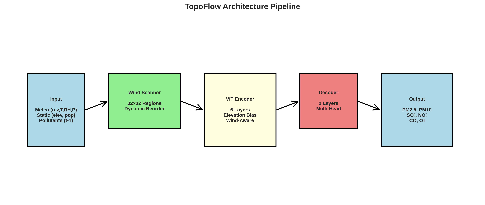

A physics-informed Vision Transformer for multi-pollutant air quality forecasting over China, with wind-following patch reordering and topography-aware attention.
Abstract
We propose TopoFlow, a physics-informed Vision Transformer for multi-pollutant air quality forecasting over China. TopoFlow extends the ClimaX architecture with two key innovations: (1) wind-following patch reordering that aligns the sequential processing of spatial patches with atmospheric transport direction, and (2) topography-aware attention bias that encodes elevation barriers as a learnable inductive bias in the first transformer block.
The model operates on a 128 × 256 grid at 0.25° resolution covering mainland China and Taiwan, jointly forecasting six pollutants (PM2.5, PM10, SO2, NO2, CO, O3) at four temporal horizons (12h, 24h, 48h, 96h). Trained on the Chinese Air Quality Reanalysis (CAQRA) dataset from 2013–2016, validated on 2017, and tested on 2018, TopoFlow is compared against CAMS global forecasts, Microsoft Aurora, the ClimaX baseline, and independent OpenAQ station measurements.
The learnable parameter α controls the strength of topographic resistance in the elevation bias, physically encoding mountain blocking effects on pollutant transport — a phenomenon critical in regions like the Sichuan Basin, Tarim Basin, and North China Plain.
Model Design
TopoFlow extends the Vision Transformer with physics-informed components for atmospheric transport modeling.
Figure 1. TopoFlow architecture: Wind-guided patch reordering with sector-based estimation, elevation-aware attention bias (α parameter), variable-specific patch embedding, and multi-pollutant prediction heads.
Methodology
Two physics-informed inductive biases for atmospheric transport modeling, integrated into a pre-trained ClimaX backbone.
Standard ViTs process patches in raster-scan order, which is agnostic to physical transport. TopoFlow reorders patches from upwind to downwind using 16 pre-computed wind sectors, creating an inductive bias aligned with atmospheric advection.
Patches are sorted by ascending projection $\pi_k^{(s)}$ along the dominant wind direction $\theta_s$. The wind direction is computed from magnitude-weighted averaging of $(u, v)$ wind components.
The first transformer block (Block 0) incorporates a learnable elevation bias that penalizes attention between patches when the destination patch is at higher elevation, encoding topographic barriers.
The learnable parameter $\alpha$ (initialized at 2.0) controls topographic resistance strength. $z_0 = 1000$ m is a normalization constant. ReLU ensures only uphill transport is penalized.
Following T5-style bucketing, relative spatial positions are discretized into 32 × 32 buckets with logarithmic binning. This reduces memory from $\mathcal{O}(N^2)$ to $\mathcal{O}(M^2)$ learnable parameters while encoding spatial proximity.
The final attention scores combine raw dot-product similarity, position bias, and elevation bias before softmax.
Each of 15 input variables is embedded independently via variable-specific Conv2D projections, then aggregated through cross-attention. A 2-layer MLP decoder predicts 6 pollutants × 4 horizons simultaneously from a single forward pass.
Training uses MSE loss with geographic masking restricted to mainland China and Taiwan (~45% of the grid).
Evaluation
TopoFlow validated across extreme pollution events, seasonal patterns, and multi-model comparisons on the 2018 test set and independent OpenAQ station data.
Side-by-side animation of TopoFlow 12h forecasts compared to CAQRA reanalysis across the 2018 test set. Select a pollutant to see spatial pattern evolution.
Annual mean PM2.5 concentrations across the study domain, highlighting the North China Plain, Sichuan Basin, and Yangtze River Delta as major pollution hotspots. The 128 × 256 grid at 0.25° resolution covers mainland China and Taiwan.
PM2.5 spatial distribution across Winter (Jan 15), Spring (Mar 1), Summer (Jul 12), and Autumn (Oct 19) 2019. Five rows compare CAMS global forecasts, Microsoft Aurora, CAQRA reanalysis (ground truth), TopoFlow predictions, and independent OpenAQ station measurements. TopoFlow captures fine-scale spatial structure absent from CAMS global forecasts and better resolves seasonal patterns than Aurora.
Back-trajectory analysis of a major trans-boundary pollution event. PM2.5 snapshots from Nov 8–16 show the plume building from Central China and converging on Beijing, reaching >200 μg/m3. TopoFlow captures the temporal evolution and spatial extent of the event.
Topographic blocking effect in the Sichuan Basin (Jul 2018). The Tibetan Plateau acts as a barrier, trapping pollutants in the basin. TopoFlow's elevation bias captures this mechanism — the transect at 30°N shows PM2.5 accumulation matching observed patterns, unlike ClimaX which smooths across the barrier.
Three-dimensional visualization of TopoFlow's predicted PM2.5 surface over the Sichuan Basin region, with independent OpenAQ station measurements overlaid as red markers. The surface captures the spatial gradient from elevated concentrations in the basin interior (trapped by topography) to lower values at the plateau edges.
Mathematical Framework
The mathematical formulation of TopoFlow's physics-informed attention mechanism.
The first transformer block augments standard attention with position and elevation biases:
$$\mathbf{A} = \text{softmax}\!\left(\frac{\mathbf{QK}^\top}{\sqrt{d_h}} + \mathbf{B}_{\text{pos}} + \mathbf{B}_{\text{elev}}\right)$$Penalizes uphill pollutant transport across topographic barriers:
$$\mathbf{B}_{\text{elev}}[i,j] = -\alpha \cdot \text{ReLU}\!\left(\frac{z_j - z_i}{1000}\right)$$Magnitude-weighted average of horizontal wind components:
$$\theta_{\text{wind}} = \arctan2\!\left(\frac{\sum u \cdot w}{\sum w},\; \frac{\sum v \cdot w}{\sum w}\right)$$MSE computed only over valid China + Taiwan regions:
$$\mathcal{L} = \frac{1}{\|\mathbf{M}\|_1} \sum_{v,i,j} \mathbf{M}_{ij} \cdot (\hat{Y}_{v,i,j} - Y_{v,i,j})^2$$Technical Details
Complete technical specifications of the TopoFlow architecture and training configuration.
| Component | Specification |
|---|---|
| Input Resolution | 128 × 256 (0.25° grid) |
| Patch Size | 2 × 2 pixels (8,192 patches) |
| Embedding Dimension | 768 |
| Transformer Depth | 6 blocks (1 TopoFlow + 5 standard ViT) |
| Attention Heads | 8 (per-head dim = 96) |
| MLP Ratio | 4.0 (hidden dim = 3,072) |
| Total Parameters | ~52M |
| Input Variables | 15 (5 meteo + 6 pollutants + 2 coords + 2 static) |
| Output Variables | 6 pollutants (PM2.5, PM10, SO2, NO2, CO, O3) |
| Forecast Horizons | 12h, 24h, 48h, 96h |
| Wind Sectors | 16 pre-computed orderings (22.5° each) |
| Position Bias Buckets | 32 × 32 = 1,024 per head |
| α Initialization | 2.0 (learnable, converges to ~1.0) |
| Training Parameter | Value |
|---|---|
| Optimizer | AdamW (weight decay = 0.01) |
| Base Learning Rate | 1 × 10-4 (cosine annealing + 2k warmup) |
| Effective Batch Size | 512 (128 GPUs × 2 × 2 grad accum) |
| Training Data | 2013–2016 (CAQRA) |
| Validation | 2017 |
| Test Set | 2018 |
| Epochs | 60 |
| Infrastructure | 128 AMD MI250X GPUs (16 LUMI-G nodes) |
| Framework | PyTorch Lightning + DDP |
Getting Started
Install TopoFlow and run inference in a few lines of code.
Reference